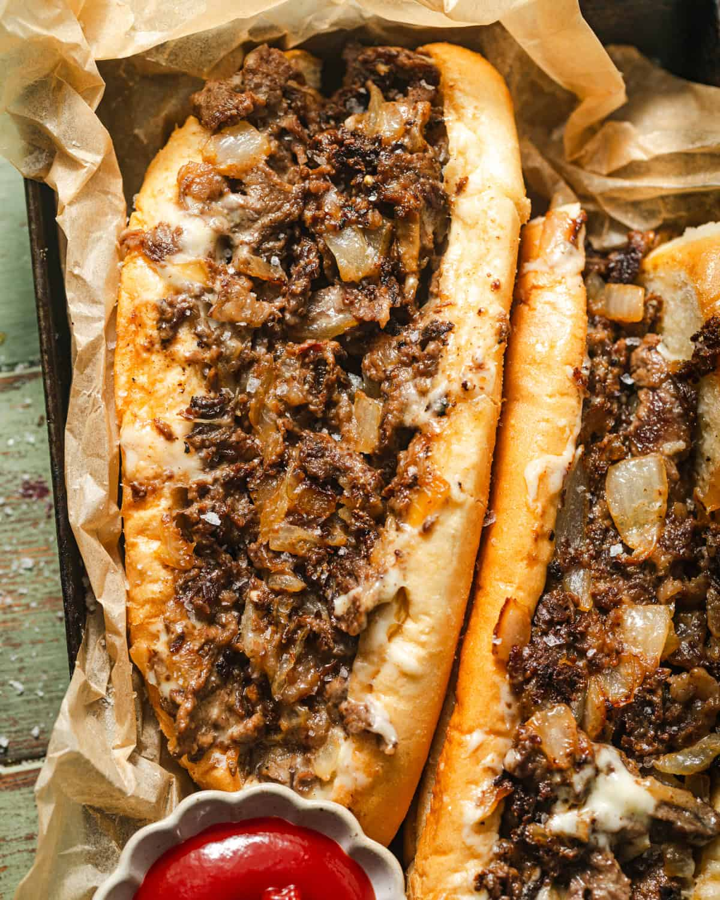

This homemade Philly cheesesteak recipe is the real-deal! Tender ribeye sliced nice and thin with caramelized onions, and gooey cheese piled onto a soft amoroso hoagie roll. It’s simple, delicious, and exactly how it’s done in Philly!
Ingredients
Philly Cheesteak Ingredients
- Ribeye Steak
- Kosher Salt
- Black Pepper
- Onion Powder
- Garlic Powder
- Yellow Onions
- White American Cheese
- Amoroso Roll
Steps To Cooking
- Use a sharp knife, place the meat on a cutting board and begin to shave the meat on a bias – as thinly as possible.
- After shaved, Coarsely chop into bits. If using pre-sliced meat, chop the meat into bits.
- Add vegetable oil into a large skillet or griddle over medium-high heat. Get the pan nice and hot,
about 5 minutes. Add the meat and onions into the skillet in an even layer and cook undisturbed for 5-7 minutes,
until browned. Use the bottom of a spatula to break up the meat and cook until no longer pink.
- Season with onion powder, garlic powder, kosher salt, and black pepper.
Stir until seasonings are evenly dispersed, then tear up slices of American cheese and cook until the cheese is melted,
stirring constantly so that it doesn’t burn on the bottom of the pan/griddle.
- Divide the meat mixture into two. Place 3 slices of american cheese on top of each portion.
Reduce stove to medium heat and cover with a lid until the cheese is fully melted, about 1-2 minutes.
- Spread mayo on inside of the hoagie rolls. Place the rolls cut side down on top of the meat and use the spatula to scoop the meat into the rolls.
Odin Recipes Homepage